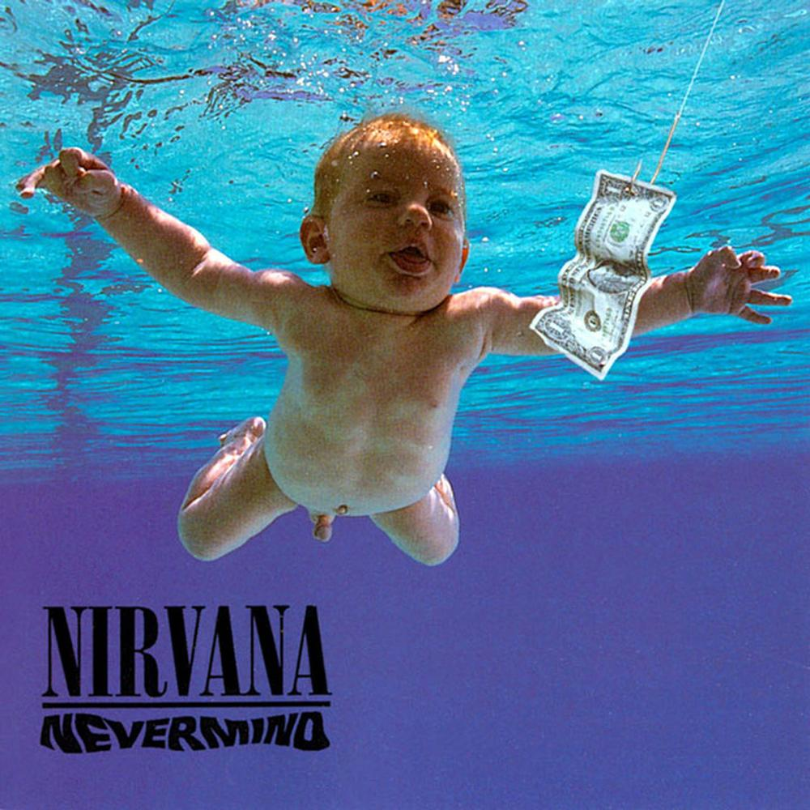

Nevermind es el segundo álbum de estudio de la banda estadounidense Nirvana, publicado el 24 de septiembre de 1991. Producido por Butch Vig, Nevermind fue el primer lanzamiento de la banda con DGC Records. El líder de la agrupación, Kurt Cobain, trató de hacer música fuera de los límites restrictivos de la escena grunge de Seattle, aprovechando la influencia de grupos como los Pixies y su uso de la dinámica de canciones ruidosas y calmadas.
